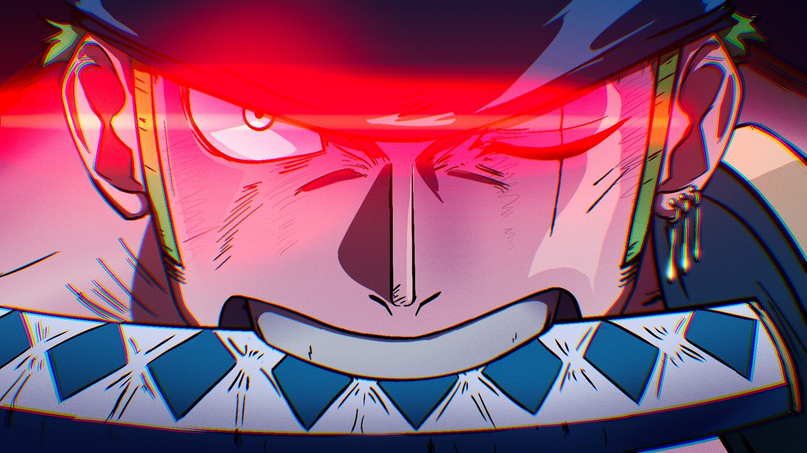
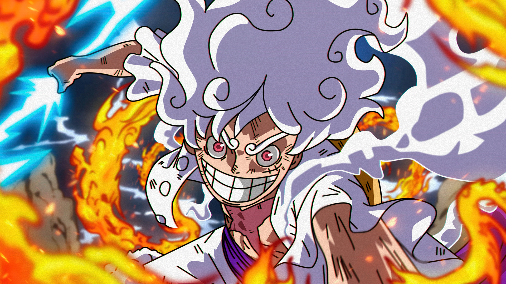
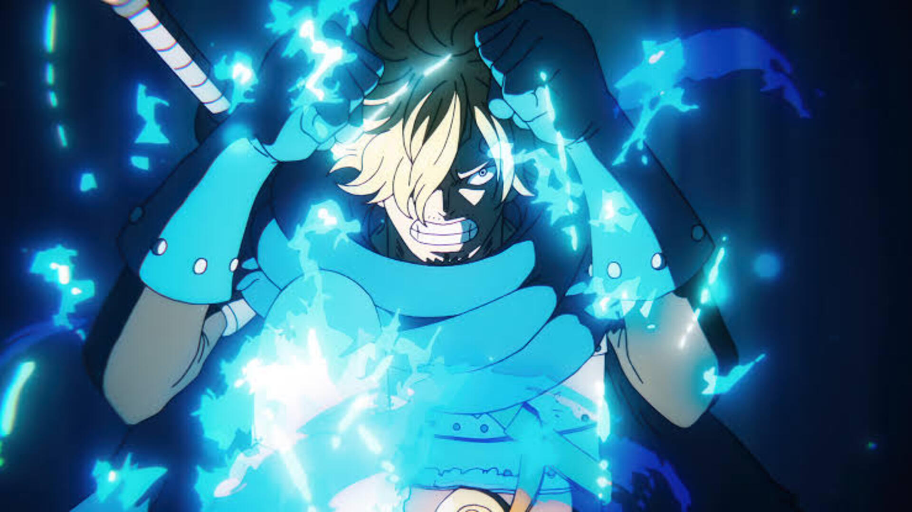

One Piece é um dos animes mais longos e populares da história, narrando as aventuras de Monkey D. Luffy, um jovem que ganha propriedades de borracha após comer acidentalmente uma Fruta do Diabo. O enredo central acompanha Luffy em sua jornada para formar a Tripulação dos Piratas do Chapéu de Palha e navegar pela perigosa Grand Line em busca do "One Piece", o lendário tesouro deixado pelo antigo Rei dos Piratas, Gol D. Roger, que promete dar ao seu descobridor riqueza, fama e o título máximo dos mares.
Ao longo de centenas de episódios, a história se destaca pela construção de um mundo vasto, rico e político, onde os heróis enfrentam marinheiros corruptos, imperadores poderosos e segredos de um século esquecido. Mais do que uma simples busca por tesouros, o anime explora temas profundos como amizade, opressão governamental, escravidão e o verdadeiro significado de liberdade, cativando os fãs com lutas épicas e reviravoltas emocionantes.


